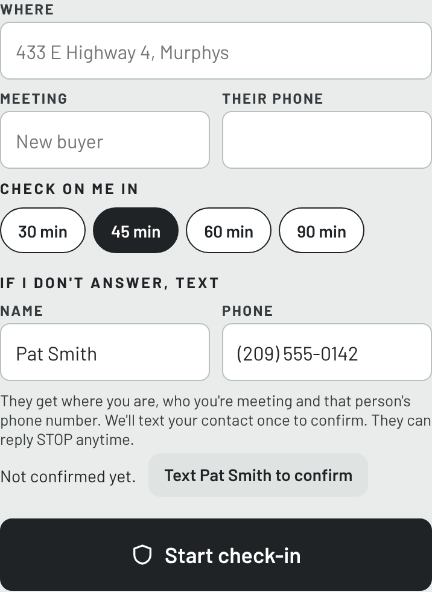
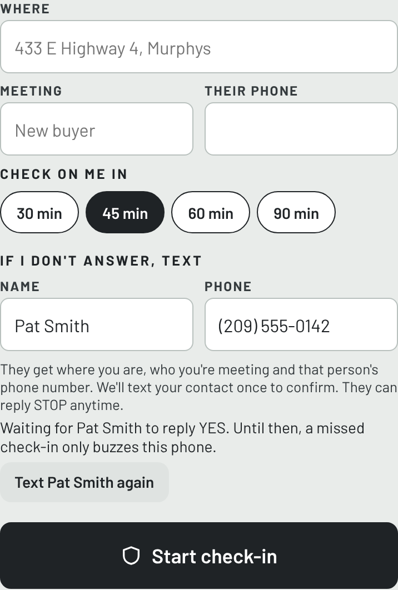
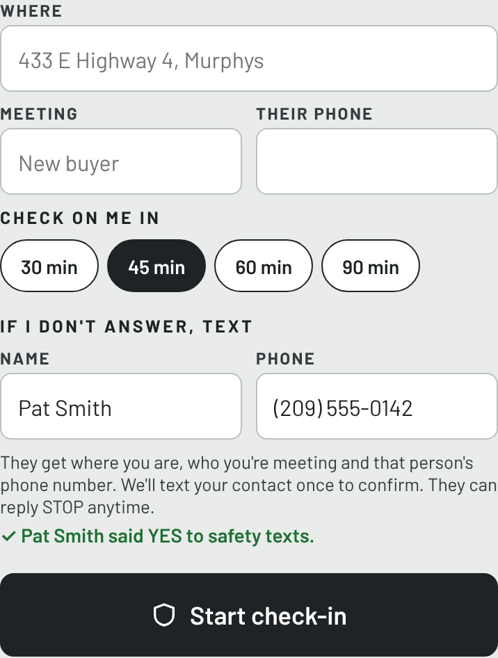

What this is
Brokers Bestie is a phone app for real estate agents. Before meeting a stranger at a property, an agent can start a safety check-in. If the agent doesn't check back in, or presses Send help, Bestie texts the one emergency contact the agent chose, with where the agent is and who they were meeting.
That's the only text Bestie sends. No marketing, no promotions, and nothing to the agent's clients.
How a contact agrees (opt-in)
- The agent adds the contact in the app. On the safety check-in screen the agent enters the person's name and mobile number. The screen says: “We'll text your contact once to confirm. They can reply STOP anytime.”
- Bestie texts the contact once to ask. Nothing else is ever sent until they answer.
- The contact replies YES to agree, or STOP to opt out. Alerts go only to a contact who replied YES. The app shows the agent whether the contact is waiting, has agreed, or opted out.



The confirmation text, and the reply to YES
Brokers Bestie: Jane Smith added you as their safety contact. You'll only get a text if they miss a safety check-in or ask for help. Reply YES to accept or STOP to opt out. Msg & data rates may apply.
YES
Brokers Bestie: thanks! You're Jane Smith's safety contact. You'll only hear from us if they miss a check-in or ask for help. Reply STOP anytime to opt out, HELP for help.
What an alert looks like
Brokers Bestie safety alert: Jane Smith started a safety check-in at 123 Main St, Angels Camp, CA and has not checked back in. They were meeting Tom. Location: https://maps.google.com/?q=38.0683,-120.5397 Please try to reach them now. If you can't, call 911. Reply STOP to opt out.
If the agent presses Send help, the alert says they pressed SEND HELP instead.
Stop, help, rates
- STOP (or UNSUBSCRIBE, CANCEL, END, QUIT): no more texts from Brokers Bestie, for any agent.
- HELP: we reply: “Brokers Bestie: safety check-in alerts for real estate agents, sent only when an agent you agreed to look out for misses a check-in or asks for help. Msg & data rates may apply. Reply STOP to opt out. Help: support@brokersbestie.app”
- Message frequency varies. Most contacts never get an alert. Message and data rates may apply. Carriers are not liable for delayed or undelivered messages.
- Mobile numbers and SMS consent are never shared with or sold to third parties or affiliates for marketing or promotional purposes.
More
Privacy policy · Terms of use · Questions: support@brokersbestie.app
Brokers Bestie · brokersbestie.app